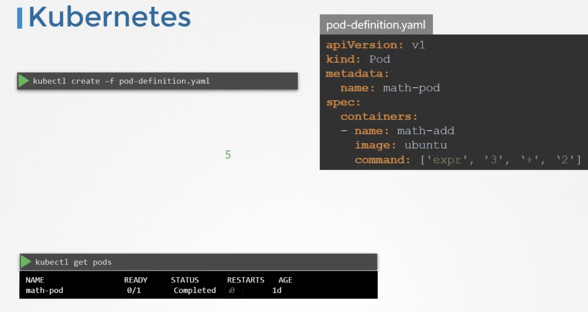
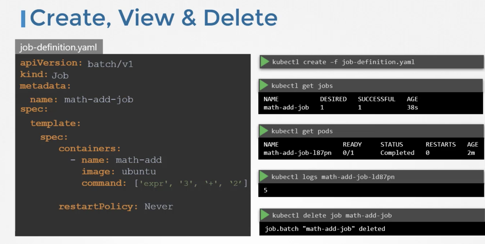
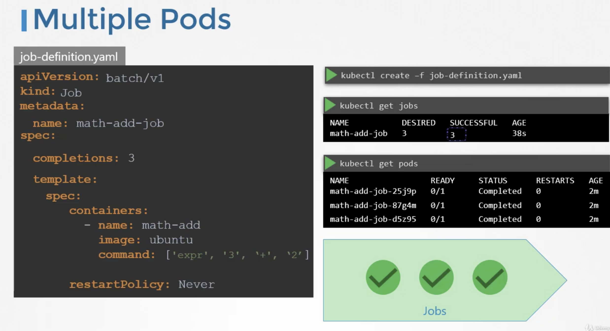
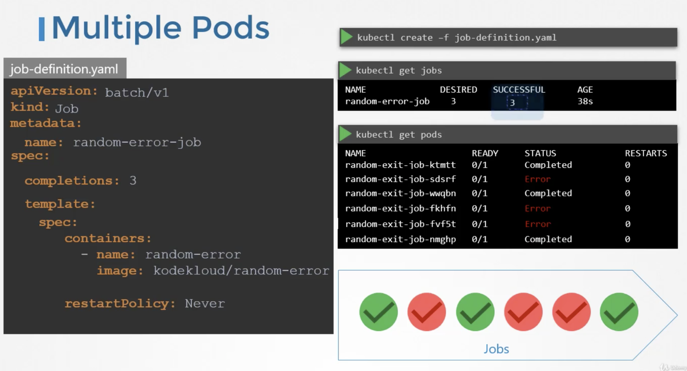
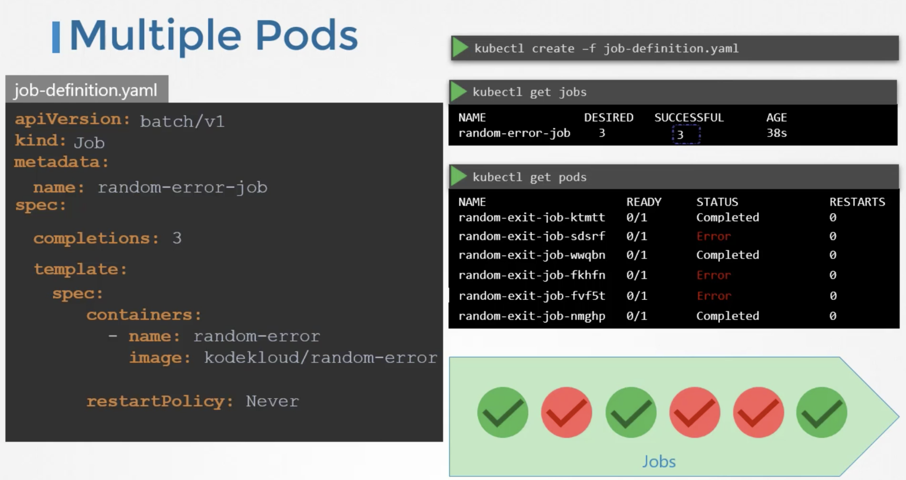
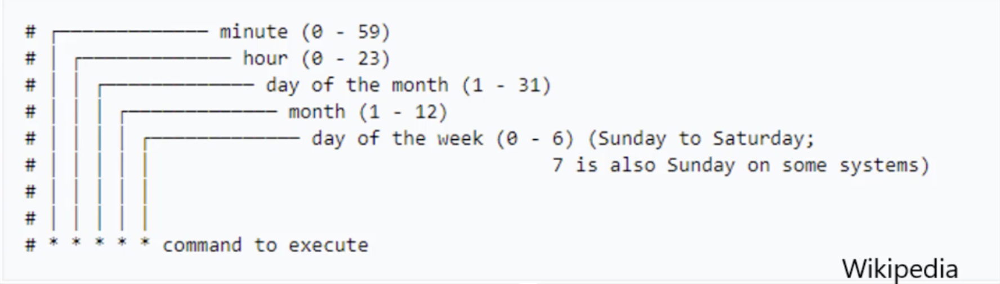

There are different types of workloads that a container can serve.
Workloads such as web servers continue to run for a long period of time, until manually taken down.
There are other kinds of workloads such as batch processing, analytics or reporting, that are meant to carryout specific tasks and finish.
Example: Performing a computation, processing an image, performing an analytic task, sending an email etc,. These are meant for short period of time.
Let us first see how these workloads work in docker.
In Docker,
docker run ubuntu expr 3+2 (performs a simple math operation)
In this case, docker container comes up, perform the simple operation, prints the output and then exists.
when we run docker ps -a command, we see the container in exit state.
In Kubernetes,

Though the container computes output and exits, kubernetes continues to restart the container and bring it up again. This continues to happen until a threshold is reached.
Kubernetes wants our applications to live forever. The default behaviour of pods is to attempt to restart the container to keep it running.
This behaviour is defined by the property restartPolicy set on the pod which is by default set to always. Therefore, the pod always recreates the container when it exits. We can overwrite this behaviour by setting this property to Never or Onfailure. Thus, the kubernetes does not restart the container once the job is finished.
pod-definition file
apiVersion: v1
kind: Pod
metadata:
name: math-pod
spec:
containers:
- name: math-add
image: ubuntu
command: ['expr', '3', '+', '2']
restartPolicy: Never
While replicaset is used to make sure a specified number of pods are running at all time, a job is used to run a set of pods to perform a given task to completion.
We create a job using a definition file.
job-definition file
apiVersion: batch/v1
kind: Job
metadata:
name: math-add-job
spec:
template:
# pod-definition specification
spec:
containers:
- name: math-add
image: ubuntu
command: ['expr', '2', '+', '3']
restartPolicy: Never
To create a job
kubectl create -f job-definition.yaml
To view the jobs
kubectl get jobs
The standard ouput of the container can be seen in container logs
kubectl logs <podname>
To delete the job
kubectl delete job <jobname>

Job with multiple pods
To run multiple pods we set a value for completions under the job specification.

By default, the pods are created one after the other. The second pod is created only after the first is finished.
If the pod fails, the job tries to create new pods until it has three successful completions, and that completes the job.

Instead of getting the pods created sequentially, we can get them created in parallel. For this add the property called parallelism to the job specification.
We set it to 3, to create 3 pods in parallel.

The job first creates 3 pods at once, two of which completes successfully. Now, we only need one more, it is intelligent enough to create one pod at a time, until we get a total 3 successful pods.
CronJobs
A CronJob is a job that can be scheduled. We can schedule and run a CronJob Periodically. Example: A job to generate a report and send an email.
cronjob-definition file
apiVersion: batch/v1beta1
kind: CronJob
metadata:
name: reporting-cron-job
spec:
# schedule option takes cron like format string, where it takes the time when the job is to be run
schedule: "*/1 * * * *"
jobTemplate:
# Job spec
spec:
completions: 3
parallelism: 3
template:
spec:
containers:
- name: reporting-tool
image: reporting-tool
restartPolicy: Never

To create cronjob
kubectl create -f <cronjob-definition-file>
To view the available cronjobs
kubectl get cronjob